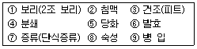
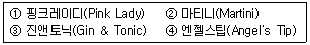
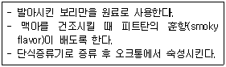
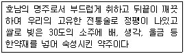
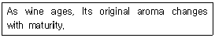
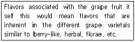
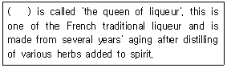
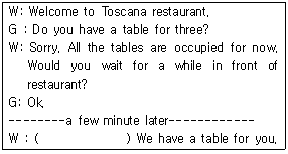
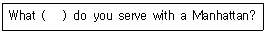
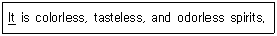

조주기능사 (2009-01-18 기출문제)
1과목: 주류학개론
1. white wine을 차게 마시는 이유는?
- 유산은 온도가 낮으면 단맛이 더 강해지기 때문이다.
- 사과산은 온도가 차가울 때 더욱 fruity하기 때문이다.
- tannin의 맛은 차가울수록 부드러워지기 때문이다.
- polyphenol은 차가울 때 인체에 더욱 이롭기 때문이다.
(정답률: 76%)

2. 일반적으로 칵테일에 사용되지 않는 시럽(syrup)은?
- Plain syrup
- Gum syrup
- Grenadine syrup
- Maple syrup
(정답률: 57%)
3. Draft Beer란 무엇인가?
- 효모가 살균되어 저장이 가능한 맥주
- 효모가 살균되지 않아 장기저장이 불가능한 맥주
- 제조과정에서 특별히 만든 흑맥주
- 저장이 가능한 병이나 캔 맥주
(정답률: 80%)
4. Brandy의 등급을 나타내는 V.S.O.P의 약자는?
- Very Superior Old Passion
- Very Superior Old pale
- Verse Superior Old pale
- Verse Special Old Passion
(정답률: 65%)
5. dry wine이 당분이 거의 남아 있지 않은 상태가 되는 주된 이유는?
- 발효 중에 생성되는 호박산, 젖산 등의 산 성분 때문
- 포도 속의 천연 포도당을 거의 완전히 발효시키기 때문
- 페노릭 성분의 함량이 많기 때문
- 설탕을 넣는 가당 공정을 거치지 않기 때문
(정답률: 78%)
6. 다음 중 혼성주에 해당하는 것은?
- Crown Royal
- Tangueray
- Absolute
- lrish Mist
(정답률: 30%)
7. Cognac은 무엇을 원료로 만든 술인가?
- 감자
- 옥수수
- 보리
- 포도
(정답률: 85%)
8. sherry wine 의 원산지는?
- Bordeaux 지방
- Xeres 지방
- Rhine 지방
- Hockheim 지방
(정답률: 49%)
9. Rum의 주원료는?
- malt
- hop
- molasses
- juniperberry
(정답률: 66%)
10. 양주에 표시된 도수 중 미국식 도수 표시(American proof) 86도는 우리나라 도수 표시로 몇 도에 해당하는가?
- 43도
- 86도
- 172도
- 7.9도
(정답률: 92%)
11. Gibson을 조주할 때 garnish는 무엇으로 하는가?
- Olive
- Cherry
- Onion
- Lime
(정답률: 84%)
12. 레드 와인 제조 과정이 순서대로 연결된 것은?
- 수확-분쇄-압착-발효-숙성-여과-병입
- 수확-분쇄-발효-압착-숙성-여과-병입
- 수확-분쇄-압착-숙성-발효-여과-병입
- 수확-압착-분쇄-발효-숙성-여과-병입
(정답률: 15%)
13. simple syrup을 만드는 데 필요한 것은?
- lemon
- butter
- cinnamon
- sugar
(정답률: 80%)
14. 증류주가 아닌 것은?
- Rum
- Malt Whisky
- Brandy
- Vermouth
(정답률: 69%)
15. 다음 계랑단위 중 옳은 것은?
- 1oz = 28.35㎖
- 1Dash= 6Teaspoon
- 1Jigger= 60㎖
- 1shot= 100㎖
(정답률: 52%)
16. 일반적으로 bourbon Whiskey를 주조할 때 약 몇 %의 어떤 곡물이 사용되는가?
- 50% 이상의 호밀
- 40% 이상의 감자
- 51% 이상의 옥수수
- 40%이상의 보리
(정답률: 78%)
17. 바 스푼(Bar Spoon)의 용도에 대한 설명으로 틀린 것은?
- Floating Cocktail을 만들 때 사용한다.
- mixing glass를 이용하여 칵테일을 만들 때 휘젓는 용도로 사용한다.
- 글라스의 내용물을 섞을 때 사용한다.
- 얼음을 아주 잘게 부술 때 사용한다.
(정답률: 64%)
18. Fino를 일정기간 숙성시킨 것으로 숙성과정에서 색이 호박색(황금색)으로 변하는 medium sweet형의 sherry wine은?
- Amontillado
- Amoroso
- Manzanilla
- Oloroso
(정답률: 35%)
19. Still wine을 바르게 설명한 것은?
- 발포성 와인
- 식사 전 와인
- 비발포성 와인
- 식사 후 와인
(정답률: 67%)
20. 얼음을 거르는 기구는?
- Jigger
- Cork Screw
- Pourer
- Strainer
(정답률: 93%)
21. 칵테일의 특징이 아닌 것은?
- 부드러운 맛
- 분위기의 증진
- 색, 맛, 향의 조화
- 폴리페놀, 소화증진 효소 함유
(정답률: 72%)
22. 맥주의 마개를 따서 맥주가 넘쳐 나올 경우의 보관·관리상 원인은?
- 시원하고 그늘진 곳에 보관하였다.
- 통풍이 잘되지 않는 지하에서 보관하였다.
- 너무 차게 하였으나 너무 오래 되었다.
- 건조하게 보관하였으며 직사광선에 노출되었다.
(정답률: 38%)
23. 이탈리아 리큐르로 살구씨를 물과 함께 증류하여 향초성분과 혼합하고 시럽을 첨가해서 만든 리큐르는?
- Cherry Brandy
- Curacao
- Amaretto
- Tia Maria
(정답률: 70%)
24. Malt Whisky 제조 순서를 올바르게 나열한 것은?

- ①-②-③-④-⑤-⑥-⑦-⑧-⑨
- ①-③-②-④-⑤-⑥-⑦-⑧-⑨
- ①-③-②-④-⑥-⑤-⑦-⑧-⑨
- ①-②-③-④-⑥-⑤-⑦-⑧-⑨
(정답률: 60%)
25. 다음 칵테일의 조주기법이 바르게 연결된 것은?

- ① 흔들기-② 휘젓기-③ 직접넣기-④ 띄우기
- ① 휘젓기-② 흔들기-③ 직접넣기-④ 띄우기
- ① 띄우기-② 휘젓기-③ 직접넣기-④ 흔들기
- ① 직접넣기-② 휘젓기-③ 흔들기-④ 띄우기
(정답률: 63%)
26. 아래의 설명에 해당하는 위스키는?

- Grain Whisky
- American Whiskey
- Malt Whisky
- Blended Whisky
(정답률: 76%)
27. 다음에서 설명하는 민속주는?

- 이강주
- 춘향주
- 국화주
- 복분자주
(정답률: 77%)
28. 맥주를 만드는 원료로 보리를 싹틔워 건조시킨 것은?
- 맥아
- 밀
- 홉
- 효모
(정답률: 83%)
29. 칵테일을 서비스할 때 lemon peel로 장식하여 제공한다는 의미로 가장 적합한 것은?
- 레몬을 슬라이스하여 장식한다.
- 레몬을 정반으로 잘라 칵테일 잔에 넣는다.
- 레몬껍질을 벗겨 잔에 걸친다.
- 레몬주스를 리밍한다.
(정답률: 75%)
30. 다음 중 중요무형문화재로 지정받은 민속주는?
- 전주 이강주
- 계룡 백일주
- 서울 문배주
- 한산 소곡주
(정답률: 65%)
2과목: 주장관리개론
31. store room에서 쓰이는 bin card의 용도는?
- 품목별 불출입 재고 기록
- 품목별 상품특성 및 용도 기록
- 품목별 수입가와 판매가 기록
- 품목별 생산지와 빈티지 기록
(정답률: 50%)
32. par stock이란?
- 영업장 보관 재고량
- 술 창고 보관 재고량
- 일일 음료 판매량
- 재고 순환율
(정답률: 52%)
33. aperitif에 대한 설명으로 옳은 것은?
- 식사 전에 먹는 식전주이다.
- 디저트용으로 먹는 술이다.
- 메인음식과 함께 먹는 술이다.
- 식사 후에 먹는 식후주이다.
(정답률: 90%)
34. 다음 중 바텐더가 지켜야 할 사항이 아닌 것은?
- 항상 고객의 입장에서 근무하며 고객을 공평이 대할 것
- 업장에 손님이 없을 시에도 서비스 자세를 바르게 유지 할 것
- 고객의 취향에 맞추어 서비스 할 것
- 고객끼리의 대화를 할 경우 적극적으로 대화에 참여할 것
(정답률: 92%)
35. 브랜디 글라스(Brandy Glass)에 대한 설명 중 틀린 것은?
- 튤립형의 글라스이다.
- 향이 잔속에서 휘감기는 특징이 있다.
- 글라스를 예열하여 따뜻한 상태로 사용한다.
- 브랜디는 글라스에 가득 채워 따른다.
(정답률: 72%)
36. 발포성 와인의 서비스 방법으로 옳은 것은?
- 병을 수직으로 세운 후 병 안쪽의 압축가스를 신속하게 빼낸다.
- 병을 45°로 기울인 후 세게 흔들어 거품이 충분히 나도록 한 후 철사 열 개를 푼다.
- 거품이 충분이 일어나도록 잔의 가운데에 한꺼번에 많은 양을 넣어 잔을 채운다.
- 거품이 너무 나지 않게 잔의 내측 벽으로 흘리면서 잔을 채운다.
(정답률: 84%)
37. 맥주를 저장할 때 신선한 맛을 유지하기 위하여 어떤 재고관리 방법을 활용하는 것이 좋은가?
- First In First Out
- Last In First Out
- Maximum Inventory
- Minimum Inventory
(정답률: 83%)
38. cork screw의 사용 용도는?
- 와인의 병마개 따개용
- 와인의 병마개용
- 와인 보관용 그릇
- 잔 받침대
(정답률: 82%)
39. 바텐더의 영업개시 전 준비사항으로 바람직하지 않은 것은?
- 레드와인을 냉각시킨다.
- 칵테일용 얼음을 준비한다.
- 글라스의 청결도를 점검한다.
- 적정재고를 점검한다.
(정답률: 76%)
40. glass류 취급 요령으로 맞지 않는 것은?
- 습기가 없는 청결한 장소에 보관 한다.
- 차게 서브되는 품목의 glass는 냉장고에 보관한다.
- glass는 사용 후 기름기가 많을 때는 찬물에 세척한다.
- rack 보관하여 파손을 줄인다.
(정답률: 79%)
41. Draft Beer 관리 방법으로 잘못된 것은?
- 충격을 주면 거품이 지나치게 많이 생기므로 주의한다.
- 적온 유지를 위해 냉장고에 보관한다.
- 직사광선을 피한다.
- 변질을 막기 위하여 냉동고에 보관한다.
(정답률: 78%)
42. glass 취급 방법으로 가장 적합한 것은?
- glass 상단을 쥐고 서브한다.
- glass 중간을 쥐고 서브한다.
- glass 하단 부분을 쥐고 서브한다.
- glass 리밍 부분을 쥐고 서브한다.
(정답률: 69%)
43. Cocktail Equipment 가 아닌 것은?
- Cocktail Shaker
- Blender
- Mixing Glass
- Stirring
(정답률: 52%)
44. Brandy Base Cocktail이 아닌 것은?
- Gibson
- B & B
- Side Car
- Zoom
(정답률: 50%)
45. 주세법상 알코올분의 도수는 섭씨 몇 도에서 원용량 100분 중에 포함되어 있는 알코올분의 용량으로 하는가?
- 4도
- 10도
- 15도
- 20도
(정답률: 50%)
46. 소주의 특성 중 아닌 것은?
- 초기에는 약용으로 음용되기 시작하였다.
- 희석식 소주가 가장 일반적이다.
- 자작나무 숯으로 여과하기에 맑고 투명하다.
- 저장과 숙성과정을 거치면서 고급화 된다.
(정답률: 31%)
47. Grasshopper 칵테일의 조주 기법은?
- Float & Layer
- Shaking
- Stirring
- Building
(정답률: 80%)
48. 디캔딩(Decanting)작업이 필요하지 않은 와인은?
- 침전물이 많은 와인
- 오래 숙성된 레드 와인
- 달콤한 화이트 와인
- 숙성이 덜 된 거친 와인
(정답률: 75%)
49. 주장 경영에 있어서 프라임 코스트(Prime Cost)는?
- 감가상각과 이자율
- 식음료 재료비와 인건비
- 임대비 등의 부동산관련 비용
- 초과근무수당
(정답률: 50%)
50. Standard recipe 설정의 장점이 아닌 것은?
- 일정한 품질과 맛의 지속적 유지
- 조주 원가 산정이 용이
- 재료배합의 기준량 제시로 원가 관리용어
- 음료 보관 관리가 용이
(정답률: 85%)
3과목: 고객서비스영어
51. 아래의 설명과 관계가 깊은 것은?

- Growth
- Brilliant
- Bouquet
- Delicate
(정답률: 31%)
52. "Can you charge what I've just had to my room number 310?"의 뜻은?
- 내방 310호로 주문한 것을 배달해 줄 수 있습니까?
- 내방 310호로 거스름돈을 가져다 줄 수 있습니까?
- 내방 310호로 담당자를 보내 주시겠습니까?
- 내방 310호로 방금 마신 것을 달아놓아 주시겠습니까?
(정답률: 56%)
53. 아래의 설명과 관련이 깊은 것은?

- Aroma
- Bouquet
- Tannin
- Taste
(정답률: 44%)
54. "얼음물 좀 더 갖다 드릴까요?"의 적합한 표현은?
- Shall you have some more ice water?
- Shall I get you some more ice water?
- Will you get me some more ice water?
- Shall I have some more ice water?
(정답률: 43%)
55. Which is not an appropriate definition?
- Ice Pick : 얼음을 잘게 부술 때 사용하는 기구
- Squeezer : 과즙을 짤 때 사용하는 기구
- Ice Tong : 얼음을 제조하는 기구
- Pourer : 주류를 따를 때 흘리지 않도록 하는 기구
(정답률: 71%)
56. ( )안에 알맞은 리큐어는?

- Chartreuse
- Benedictine
- Kummel
- Cointreau
(정답률: 64%)
57. 고객과 종업원간의 대화에서 ( )안에 알맞은 것은?

- I am sorry to have kept you waiting.
- I am sorry to kept your wait.
- I am sorry to have not kept you waiting.
- I am sorry not to keep you waiting.
(정답률: 65%)
58. Select the place in which the French wine is not produced.
- Bordeaux
- Bourgogne
- Alsace
- Soave
(정답률: 37%)
59. ( )안에 적합한 것은?

- vegetable
- sauce
- garniture(garnish)
- condiment
(정답률: 73%)
60. 밑줄 친 it에 해당하는 술은?

- gin
- vodka
- white rum
- tequila
(정답률: 57%)